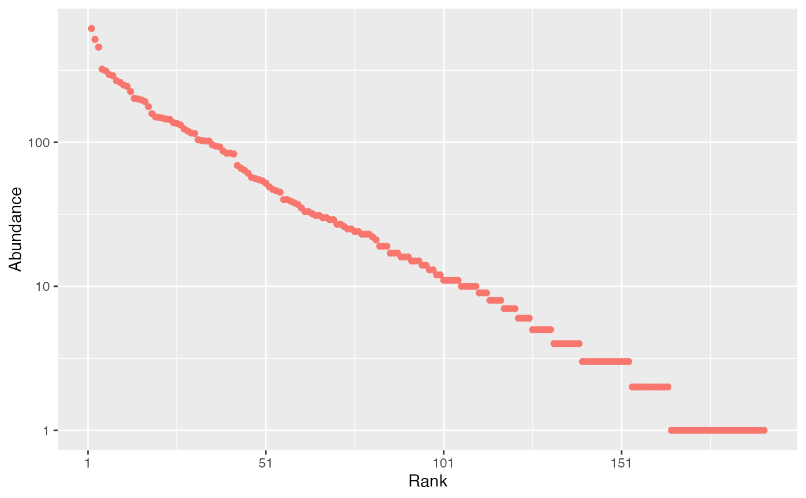

Random generation for the log-series distribution.
Arguments
- n
Number of observations.
- size
The size of the distribution.
- fisher_alpha
Fisher's \(\alpha\).
- show_progress
if TRUE, a progress bar is shown during long computations.
- check_arguments
if
TRUE, the function arguments are verified. Should be set toFALSEto save time when the arguments have been checked elsewhere.
Details
Fast implementation of the random generation of a log-series distribution Fisher1943divent.
The complete set of functions (including density, distribution function and quantiles) can be found in package sads but this implementation of the random generation is much faster.
If size is too large, i.e. size + 1 can't be distinguished from size due to rounding,
then an error is raised.
Examples
# Generate a community made of 10000 individuals with alpha=40
size <- 1E4
fisher_alpha <- 40
species_number <- fisher_alpha * log(1 + size / fisher_alpha)
abundances <- rlseries(species_number, size = 1E5, fisher_alpha = 40)
# rcommunity() may be a better choice here
autoplot(rcommunity(1, size = 1E4, fisher_alpha = 40, distribution = "lseries"))
